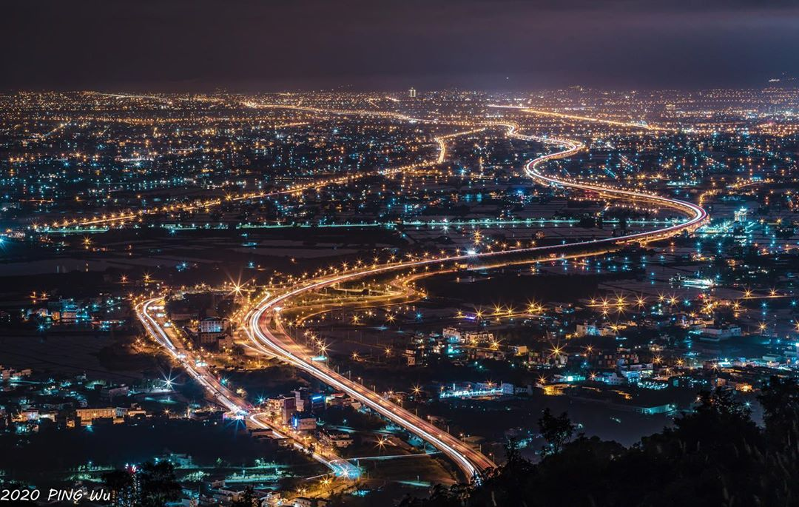
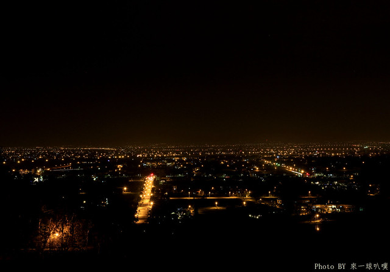

Top1
礁溪空 ㄟ 農場是近期非常熱門的景觀餐廳，佔地寬敞，店內不僅工業風設計很適合拍照打卡，向外看還有一望無際的璀璨夜景。店內為露天座位，座位數不少，並且都已經規劃在最佳的觀賞視野。由於山路狹窄、不容易會車，建議搭乘店家免費接駁車上山，是既安全又最容易欣賞百萬夜景的最佳選擇喔！

Top2
位於北宜公路 61K 的轉彎處，白天是飛行傘的起飛站，晚上變身為看夜景的秘境，向下俯視國道 5 號來往的車流，高速公路整排的路燈為平原夜景增添亮點，往左看也可以看見烏石港、龜山島。此處光害不嚴重，天氣不錯的話，抬頭還能看見滿天星空，是個很適合約會的地點。

Top3
冬山的三清宮是道教總廟，位於梅花湖山頂上，夜晚有種安寧肅靜的清幽感，向下俯瞰可以看到梅花湖的湖景，湖面映照著光影與一旁的山水景色，優雅脫俗，再望向更遠，則可見城市的點點燈火，不太擁擠的光點讓心情平靜下來，像夜晚的湖水一樣澄澈。
